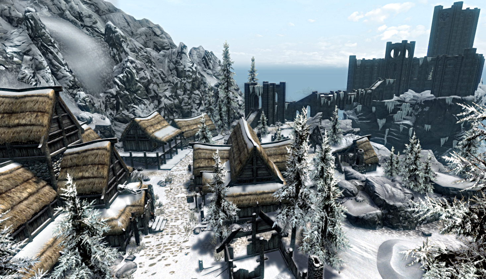

Skyrim(2011) Lore and Fun Facts
By: Jake Ozer
Overview
This is a compliation of lore and facts from Bethesda's 2011 hit The Elder Scrolls V: Skyrim. This is not so much of an analysis on the design of the game, but a deep dive into the story and universe in which the game takes place. On this page, I will cover each of the nine major areas in Skyrim and some fun facts about the lore as a whole. Thanks in advance for checking out the page!
DISCLAIMER: Many of the things that I put on this page are directly copied from internet sources like Fandom and other articles. My intention is not to plagiarize. I simply wish to organize information I find interesting as an exercise in web development.
Skyrim's Nine Holds
Whiterun
Whiterun
Whiterun Hold is the central hold of Skyrim. It is named for the capital city of the hold, Whiterun. The landscape is mostly boreal plains with vast, sparse tundra and flowing rivers; however its most striking landmark is the Throat of the World, the highest peak in Tamriel. It is said among Nords that this is where mankind was first given life. High Hrothgar is an ancient monastery resting atop the mountain where the Greybeards dwell, masters of the Voice and trainers of the Dragonborn. Though High Hrothgar is located within Whiterun Hold, the Greybeards seem to have no political ties to Whiterun, instead remaining apolitical.This hold is also known for having a large number of Giant camps. The White River divides the region. Sparse plains extend from west of the river to the township of Rorikstead near the western border, which is situated on ideal farmland. Much of the area near the southern border and east of the river is mountainous. Whiterun appears to have stable security, but some residents complain that Whiterun's security is the worst in the province, calling it shameful (perhaps referring to the lack of guards in one of the hold's villages, Riverwood, early in the game).
The Rift
The Rift is the most southeasterly of the nine Holds of Skyrim. It is one of the four oldest holds in Skyrim, known collectively as Old Holds. Major settlements include Riften, Ivarstead, and Shor's Stone. Its coat of arms is two crossed daggers. Its capital city, Riften, is home to the Thieves Guild. The Rift is located around the southeastern corner of Skyrim and borders Morrowind to the east and Cyrodiil to the south. The surrounding holds are Eastmarch to the north, Whiterun to the northwest and Falkreath to the west. Much of the Rift is composed of lush, autumn-colored valleys and rivers, surrounded by mountains to the south, east, and northeast. The Rift itself is located atop an immense plateau that clearly separates it from Eastmarch, and the western mountain range south of Throat of the World goes along its border with Falkreath, making it one of the most isolated holds in Skyrim, even more so perhaps than Winterhold and The Reach.
The Reach
The Reach is one of the nine Holds of Skyrim. Its capital is the ancient Dwemer city of Markarth, where the Empire-aligned Jarl Igmund resides and holds court in Understone Keep. The coat of arms for the Reach is a ram's head. The Reach is infamous for harboring the Forsworn, a clan of Reachmen who are fighting a long war of independence and seek to retake Markarth from the Nords and free the Hold from Imperial authority. The Forsworn are the Reach's most common enemies and dwell in the Reach highlands. With the constant threat of Forsworn attacks looming over Markarth and its surrounding settlements, the Reach is often considered the most dangerous Hold of Skyrim, fit only for seasoned adventurers or hardened mercenaries. The Reach covers much of the western border of Skyrim, with High Rock and Hammerfell to the west. These are the Highlands of Skyrim, a rugged environment with few flat clearings, dotted with juniper trees and rich in valuable ores, especially silver. Surrounding Holds include Whiterun to the east, Haafingar past the mountains to the north, Hjaalmarch to the northeast and Falkreath to the southeast.
Eastmarch
Eastmarch is one of the nine Holds of Skyrim, located along the eastern border. It is one of the four oldest holds in Skyrim, known collectively as Old Holds. The major city of Eastmarch is Windhelm, near the northern border. Ulfric Stormcloak is the Jarl of Windhelm and Eastmarch. The coat of arms is a bear's head. Eastmarch covers much of Skyrim's eastern border with Morrowind. The surrounding holds are Winterhold to the north, The Pale and Whiterun to the west and The Rift to the south. Central/south Eastmarch is a volcanically active area, plains with steaming gas leaking in between cracks in the ground, colorful, mineral filled bodies of water, and geysers. The far west of the hold resembles much of the rest of central Skyrim, and to the north a mountainous tundra, where the hold's capital Windhelm lies. The east is composed of the Velothi mountain range, which extends down to the Rift. The province's border with Morrowind can be accessed by road a short walk up the mountains from Windhelm, though the border cannot be crossed.
Haafingar
Haafingar is one of the nine Holds of Skyrim. It is located on a peninsula on the far northwest coast. It was an ancient Nordic kingdom. The hold encompasses the area surrounding its capital city, Solitude. The coat of arms is the wolf's head. Haafingar is the smallest Hold in area. Since the Fourth Era, the High King of Skyrim reigns from Solitude. The hold is separated from Hjaalmarch by the Karth River and The Reach by mountains. Dragon Bridge is the only access to the hold by road, crossing the Karth River. Much of the hold is rocky and mountainous with soaring snowy mountains surrounding the north and west of Solitude, though the lower lying areas including Dragon Bridge are mostly comprised of forests and hills.
The Pale
The Pale is one of the nine Holds of Skyrim. It is one of the four oldest holds in Skyrim, known collectively as Old Holds. Its unique shape resembles that of a boot. Its coat of arms is a four pointed star. The Capital City of The Pale is Dawnstar. The Jarl of Dawnstar and The Pale is Skald the Elder. The Pale is located in the central northern area of Skyrim and extends to the northern coast where Dawnstar is situated. The hold borders Hjaalmarch to the west, Whiterun to the south, and Winterhold and Eastmarch to the east. Most of the region is treacherously cold with pine forests that stand facing the harsh winds whipping down the mountains. Only in the southernmost part of the hold towards Whiterun does the harsh terrain abate and become grassy plains.
Hjaalmarch
Hjaalmarch is one of the nine Holds of Skyrim. Its capital is Morthal. It is one of the smallest Holds. The Hjaal River runs through a large portion of this Hold. Their coat of arms is of a triskele. Hjaalmarch is located in northern Skyrim, at the mouth of the Karth River. Morthal lies near the center of the hold. The hold borders Haafingar, separated by the Karth River to the northwest, The Reach to the west, Whiterun to the south and The Pale to the east. Much of the terrain is covered by wetlands, marshes, and swamps, which are infested with vampires. Morthal is a town shrouded in mystery. Its people are reclusive and wary of newcomers, and only a single lumber camp supports its weak economy. The Jarl is among the most relaxed in Skyrim when it comes to taxation, but Hjaalmarch is also the poorest of the nine Holds. The Hold is still part of the Empire, but the Jarl is unapologetically vague in her enthusiasm for the Imperial Legate stationed in her dwelling.
Falkreath

Falkreath Hold is the second southernmost hold in Skyrim, with its capital being Falkreath. It borders Cyrodiil to the south and Hammerfell to the west, with a single road leading to both provinces. Other than its capital, Falkreath, the other notable town in the hold is Helgen, the first settlement in Skyrim to be attacked by a dragon during the Dragon Crisis and also where the Last Dragonborn was brought to be executed after being captured in Darkwater Crossing. Falkreath Hold is covered in characteristic pine forests and described by its citizens as being covered in a fine mist that makes it seem seasonless. The mountains rising above Falkreath are well above the snow line striking a stark comparison to the rest of the hold. The most distinguishing geographic feature is Lake Ilinalta, which covers a large portion of the central region and acts as the source for the White River.
Winterhold
Winterhold, sometimes known as "The Winterhold," is one of the nine Holds of Skyrim. It is one of the four oldest holds in Skyrim, known collectively as Old Holds. At one point Winterhold was the capital of Skyrim. The coat of arms is a three-point crown. Winterhold is located on the northeast corner of Skyrim. It is an intensely cold region, and most of the hold is covered in snowy tundra plains and high mountain ranges. Along the coast is a polar environment of glaciers and icebergs. The surrounding holds are Eastmarch, to the south; and The Pale, to the west. It is home to the College of Winterhold. Winterhold has fallen on rough times ever since the Great Collapse of 4E 122 destroyed most of the town. In the aftermath, most of the residents moved away, and those that refused or could not afford to were left behind to witness the slow death of the town. The College of Winterhold was miraculously undamaged in the event, and this has led many residents to believe the College was responsible, although no proof has ever been found to support these claims.
Fun Facts and Lore
- Within the deepest recesses of the Dwemer ruins lie the falmer, an abandoned race of snow elves who inhabited the lands of Skyrim before the Nords settled in the province. They are characterized as being blind, primitive, and dangerous for adventurers who may cross their paths.
- In the land of Skyrim, there are nine gods that the people worship. These are known as the Nine Divines. Each deity has their own purpose for worship. For example, Arkay, The God of the cycle of life and death, represents human mortality, and is often associated with tombs, burials, and funeral rites.
- Skyrim is one province of the continent of Tamriel in which many cultures coexist and sometimes collide. Other provinces in Tamriel include High Rock, home of the Bretons, Summerset Isles, home of the High Elves, Morrowind, home of the Dark Elves, Valenwood, home of the Wood Elves, Hammerfell, home of the Redgaurds, Black Marsh, home of the Argonians, Elsweyr, home of the Khajit, and Cyrodiil, home of the Imperials.